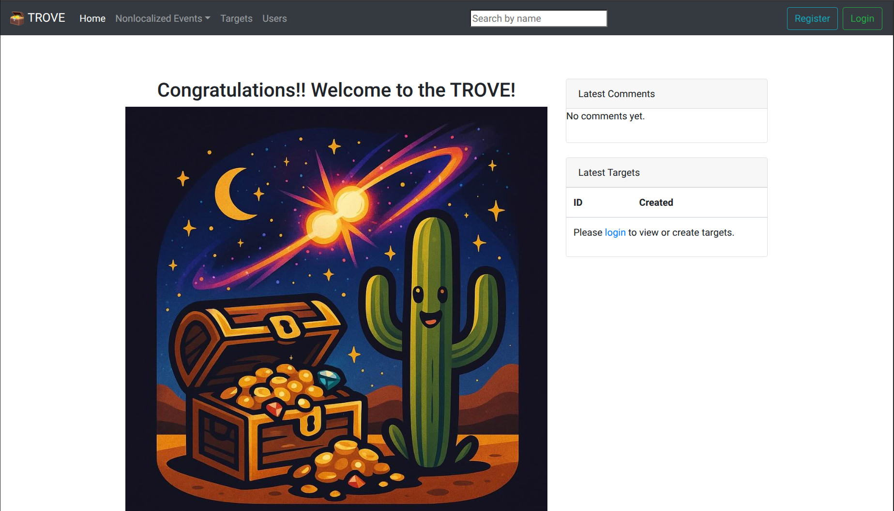
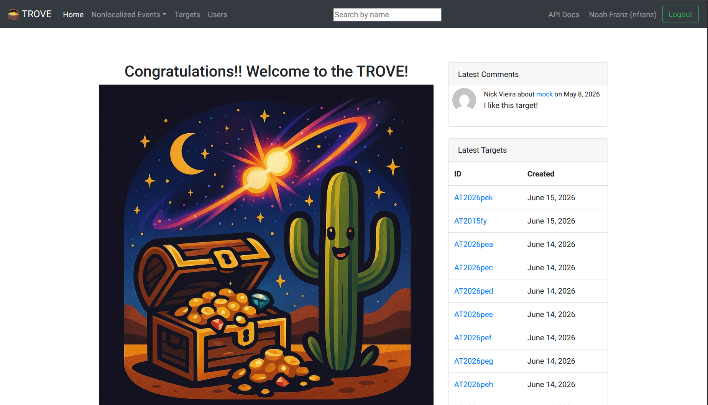
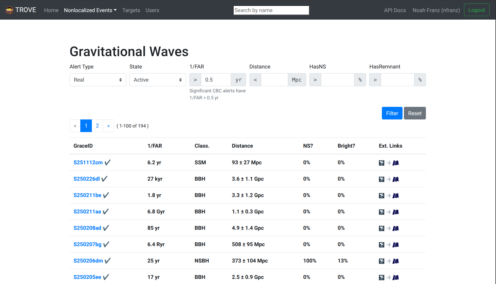
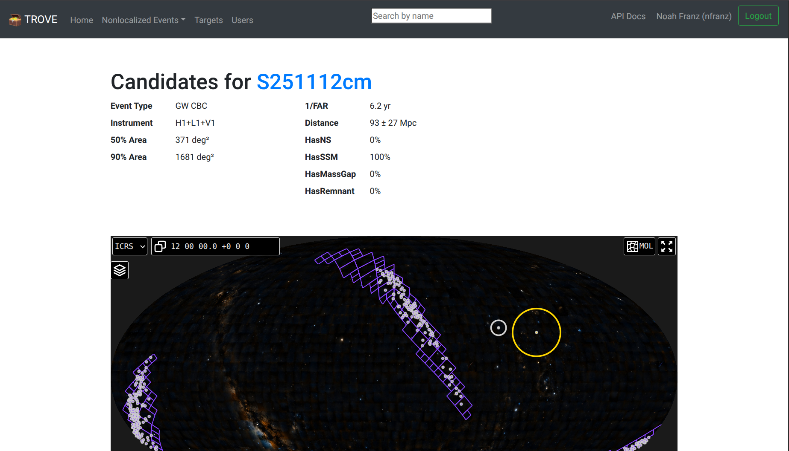
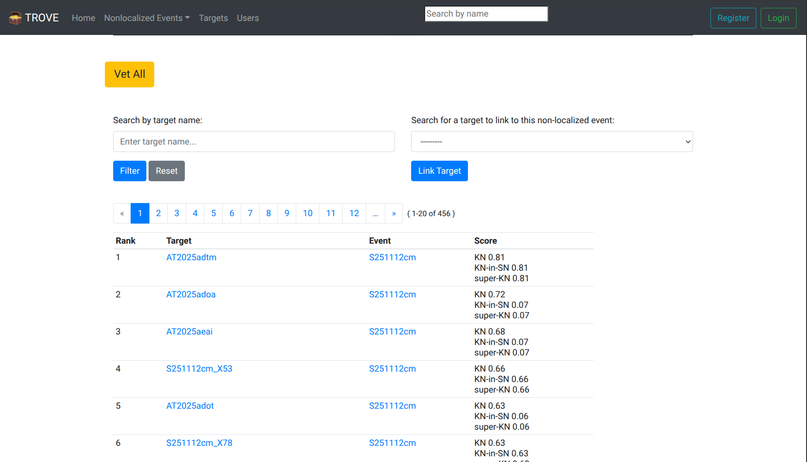
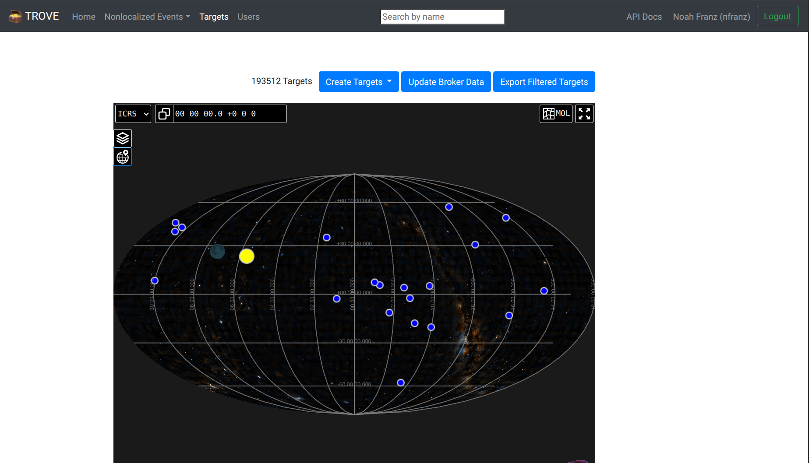
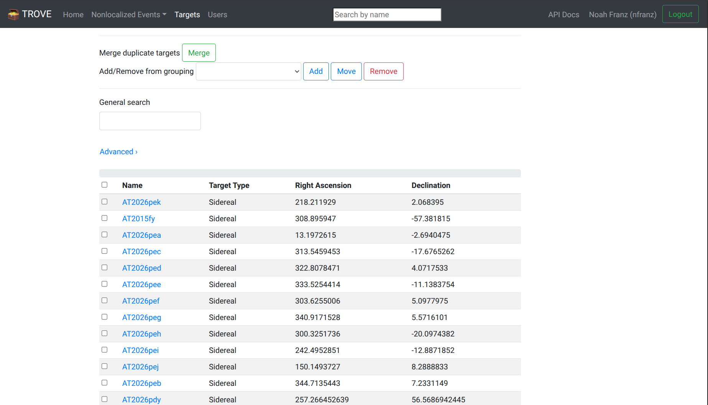
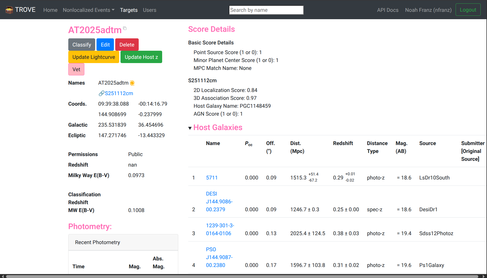
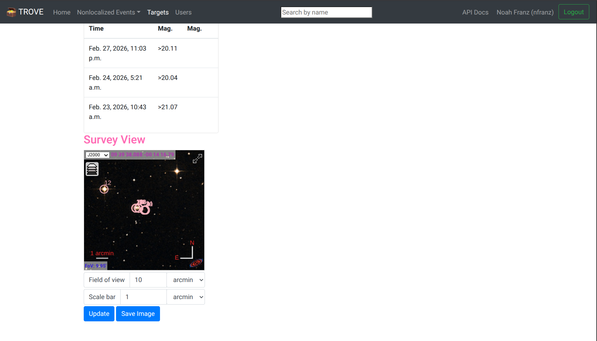
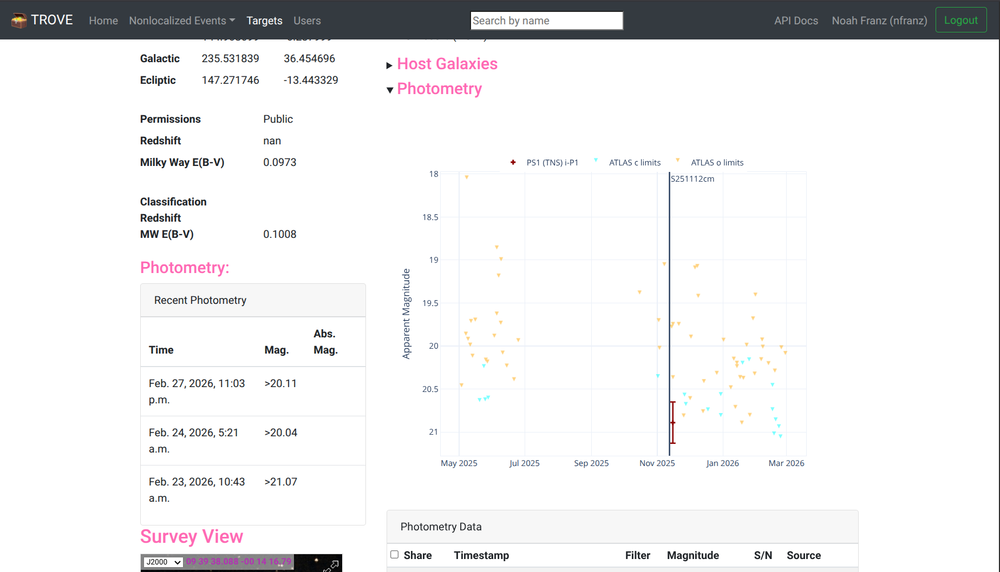

Web App Details#
Getting Started#
TROVE is located at https://datatrove.as.arizona.edu. When you first arrive at the page you will see the home page, with no content, and you should either register for an account or login. If you are registering for the first time it may take 1-2 days for your account to be approved by an administrator. If it has not been in that time please post a help message in the slack workspace.
Before logging in the home page should look like the following, with no targets or comments shown:

And after logging in you should be able to see a list of targets and comments:

Viewing Nonlocalized Events#
First, you click on the “Nonlocalized Events” tab dropdown in the navbar. From the dropdown menu you can select “Gravitational Waves” which will then take you to the following page:

On this page you can see a list of all gravitational wave events that we have ingested into our database from the IGWN. By default, we filter the table to only include events with a false alarm rate (FAR) > 2 (the recommendation from IGWN). But, you are able to adjust this FAR limit using the form at the top. There are also various other options that you are able to filter on using the form at the top of the page.
From this table, you are able to access the candidates for a specific GW event by clicking on it’s name from the table. After clicking on a GW event you should see a page like this:

This part of the page shows some basic information on the GW event and a skymap with the candidates plotted on top of the GW localization.
Scrolling down you should now see a table of the candidates ranked by score. See the following screenshot as an example:

Depending on the type of event, you will see different types of scores in the “score” column. For a BNS or NSBH it will just be the KN score. For an SSM event it will be the KN, KN-in-SN, and superKN score.
At the top of this table you can search by candidate name and link new candidates if something is missing (although the candidates should be linked automatically!). If you want to rerun forced photometry and re-score everything you can use the “Vet All” button. Although, note that “Vet All” will take ~minutes-hours and it is usually best practice to re-vet the candidates of interest.
From this page the normal workflow is to click on specific candidates and look at details. We will go into details about targets in the next two sections.
Target List Page#
Besides being able to access targets from the candidate page (which you saw above), we can instead just click the “Targets” tab in the navbar. This will look something like

and scrolling down you will see a table of targets with the most recently ingested/edited/discovered targets near the top

From this page, just like on the candidate page, you can click individual targets and go to their page.
The Target Page#
This page contains detalis of the targets themselves. When first coming to a target page it will look like

On the right side you can see details of the subscores that are general to the target and are specific to individual nonlocalized events. For example, crossmatching with the point source, agn, and asteroid catalogs are specific to the target while other scores (distance score, 2D score, etc.) can only be determined on a nle-by-nle basis.
Below the score details is a table of potential host galaxies. These are determined based on a probability of chance coincidence calculation (Pcc), where a lower Pcc indicates a more likely host galaxy. In TROVE we make a cut on Pcc < 0.15, so only low Pcc galaxies should appear in this table. The distances and redshifts of these individual host galaxies are also shown in this table.
Things like coordinates, name aliases, redshift (if known), and extinction are all shown on the left sidebar. Below that there is also an atlas viewer that has the different host galaxies shown as circles:

Finally, on the right side underneath the host galaxy table is the light curve, including photometry from TNS forced photometry servers. This light curve looks like the following
